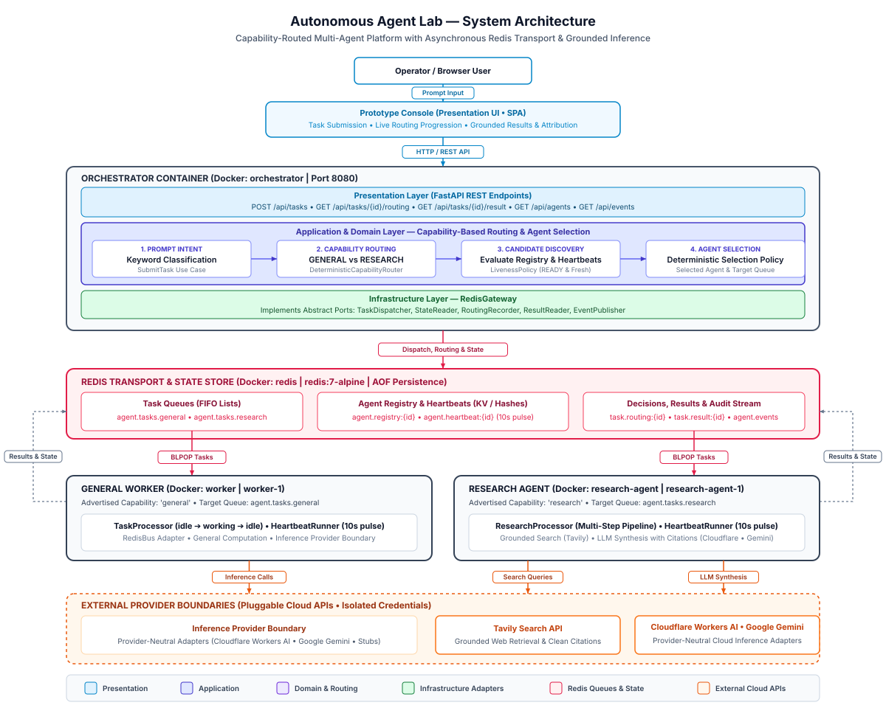
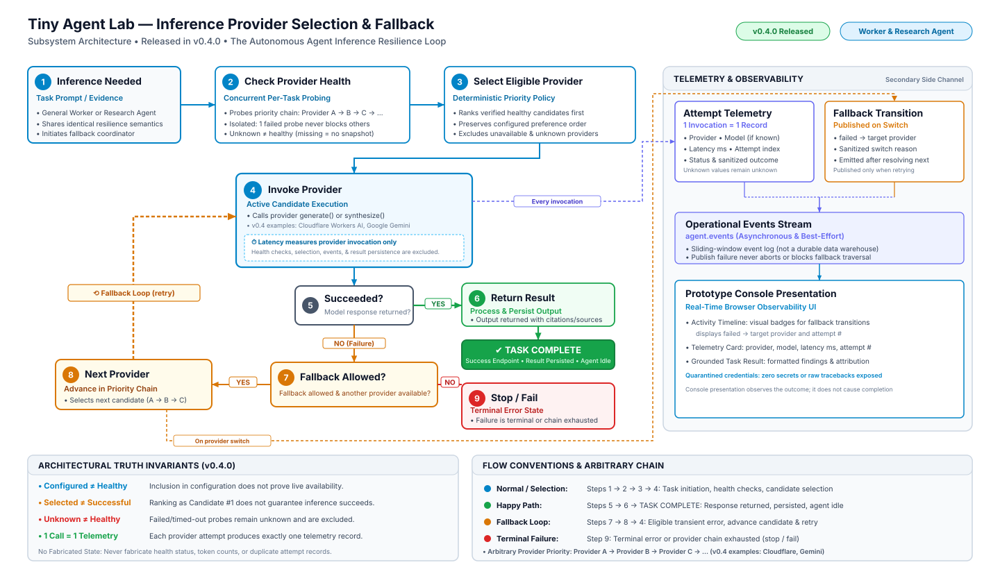

System Architecture & Clean Boundaries
Tiny Agent Lab is the current autonomous-agent project within Tiny Robot Lab. Its service packages separate routing and research rules, application workflows, HTTP delivery, and infrastructure adapters.
End-to-End System Topology
The full-system diagram follows the browser console through the Orchestrator, Redis, Worker, Research Agent, and external services.

Inference Provider Selection & Fallback Flow
This diagram shows per-task health probing, candidate ordering, provider invocation, eligible fallback, and operational telemetry.

The Four Architectural Layers
The Orchestrator contains all four layer directories. Worker and Research Agent packages use the application and infrastructure split for their runtime responsibilities.
services/
|-- orchestrator/src/orchestrator/
| |-- domain/
| |-- application/ports.py
| |-- presentation/api.py
| `-- infrastructure/redis_adapter.py
|-- research_agent/src/research_agent/
| |-- domain/
| |-- application/ports.py
| `-- infrastructure/
`-- worker/src/worker/
|-- application/ports.py
`-- infrastructure/
packages/
`-- contracts/src/agent_contracts/-
Domain
orchestrator/domain/contains capability, routing, and selection rules.research_agent/domain/contains evidence evaluation and research result models. -
Application
orchestrator/application/coordinates submission and queries;research_agent/application/coordinates research processing. Theirports.pymodules declare the collaborators those workflows need. -
Presentation
orchestrator/presentation/api.pyexposes the HTTP API and serves the browser console. -
Infrastructure
orchestrator/infrastructure/redis_adapter.pyimplements Redis access. Research and Worker infrastructure packages hold provider, retrieval, and runtime adapters.
Ports in use
| Port | Implementation and verification |
|---|---|
TaskDispatcher |
RedisGateway in orchestrator/infrastructure/redis_adapter.py supplies dispatch. create_app() accepts a dispatcher or gateway; tests/test_application.py exercises SubmitTask with a FakeTaskQueue. |
ResearchExecutor |
StubResearchExecutor, TavilyResearchExecutor, and McpTavilyResearchExecutor are selected by create_research_executor(); tests/test_research_agent.py covers selection and Tavily behavior. |
InferenceProvider |
Research Agent's StubInferenceProvider, CloudflareInferenceProvider, and GeminiInferenceProvider share the InferenceProvider port. tests/test_inference_interchangeability.py checks substitution; tests/test_provider_fallback_traversal.py covers fallback. |